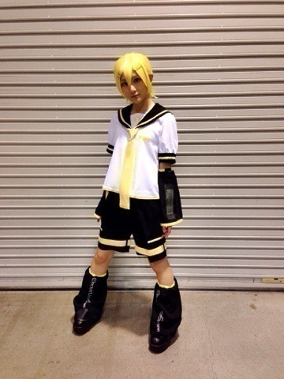
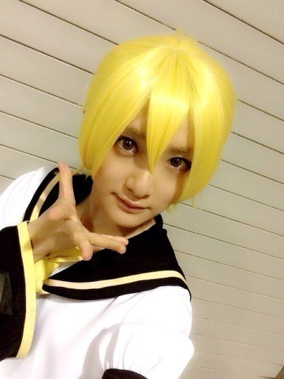
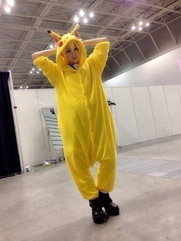

| 2014/04 21 Mon | 横浜個別握手会ヽ( ・∀・)ﾉ |
昨日は握手会でした〜ヽ(・∀・)ﾉ
来て下さった皆さんありがとうございましたヽ(・∀・)ﾉ
今回、私は生駒里奈本人なのですが、
別人で握手会に参加しました

告知もさせて頂きましたが、ボカロの
鏡音レンくんのコスプレで握手しました〜ヽ(・∀・)ﾉ
さっそく写真どーん！

ヘッドホンとかもろもろないけど。。。
全国のレンきゅんファンの皆さんすみません(；ω；)
生駒ちゃん、レンくんやらせて頂きました。
でも写真載せます。

髪の毛ピンしているのは握手する時目にかかっちゃうのでとめました！

お留守の皆様に！
今回はレンくんがエアー握手

ずっとやろうと思っていたピカチュウのコスプレもやりましたヽ(・∀・)ﾉ

レンくんがピカチュウの着ぐるみをかぶっている画像があったのでそれをやってみました〜☆
皆さんにドン引きされるか不安でしたが、意外と好評でしたヽ(・∀・)ﾉ
元々コスプレ好きだし、メイクもカラコンもちゃんとして大好きなレンくんに近づけたかな〜と思います！
またコスプレするかもなのでその時はまた言いますね
今日から新たに一週間始まりました！
皆さん元気に頑張りましょうね〜☆
へばなっ！☆
コメント(542)
2014/04/21 12:00